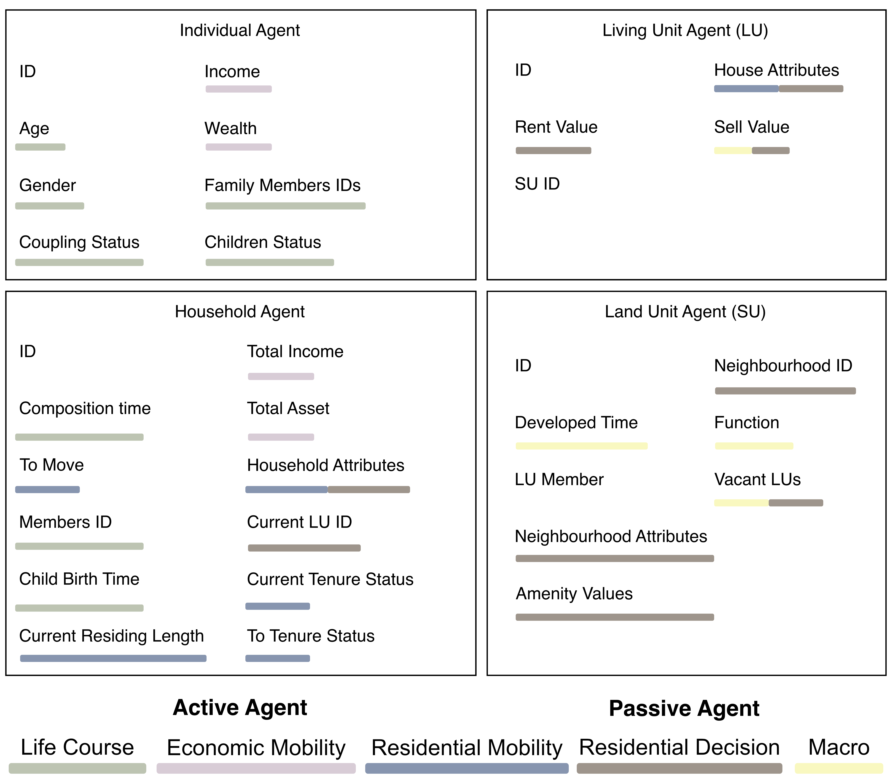
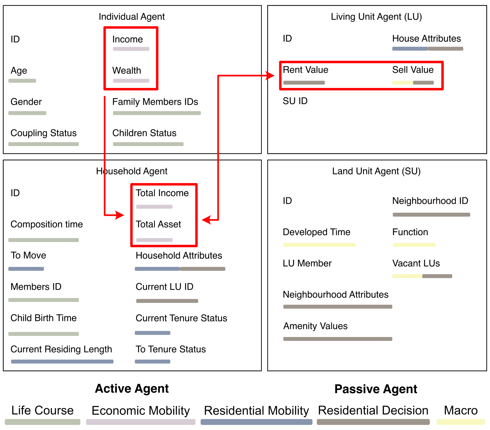

layout: true <div class="my-footer"> <img src="../imgs/TUBK_Logo_ URBA.svg" alt> </div> --- class: top, center <!-- background-image: url(/imgs/background.gif) --> <!-- Slide 01: Title Page --> SC3 Team Meeting of TBM: <br> # **A**gent-**B**ased **M**odelling # of **U**rban **E**conomic **S**egregation # In the Netherlands <br> Bayi Li Date: February 2024 <br> PhD Promotors: Prof. Dr. Maarten van Ham, Prof. Dr. Tatiana Filatova Co-promotor and Project Principal Investigator: Dr. Clémentine Cottineau ??? Good afternoon, thank Tatiana for inviting me. So today, I am going to give a brief introduction of my PhD project, an agent-based model of urban economic segregation in the Netherlands. It is affiliated with the ERC project led by Clementine, also under supervision of Tatiana. --- <!-- Slide 02: Define the targeted social phenomenon --> ## What is Urban Economic Segregation? The uneven distribution of groups with **different economic status** across **residential neighbourhoods** of a city or an urban region (adapted from Van Ham et al. (2021)). <div class="probar-footer"> <div class="bar-light-grey"> <div class="bar-grey" style="width:3%"></div> </div> </div> ??? So in this project, we define urban economic segregation as uneven spatial distribution of groups with different economic status across residential neighbourhood in urban area. -- ## Complexity of Urban Economic Segregation A complex interplay of family, housing, financial and market factors, influenced by local circumstances. ??? It is a high-level social phenomenon. From the perspective of complex theory, it can be described by interconnected networks of households, being effected by a complex interplay of family, housing, financial and market factors, influenced by local circumstances. -- Two main facets: - Residential Why do people choose to live where they live? - Economic What drove the people's economic status change over time, and then influence the housing decision? ??? As complex and multi-facet it could be, we can more focus on two aspects that are directly linked to the definition: residential and economic. So two related fundamental questions are: 1. Why do people choose to live where they live? 2. How the their economic status change over time, and then influence the housing decision? --- <!-- Slide 03: Introduce of agent-based approach --> .right[.image-90[].image-70[]] ## Agent-Based Modelling > Epstein (2006): If you didn't grow it, you didn't explain it's emergence. It generates the urban economic segregation through **autonomous residential and economic decisions, and local interactions of heterogeneous agents**. ## Causal Mechanisms A method to address complex social phenomena by searching for **causal mechanisms** that exhibit generative power of target social phenomena (Epstein 2006, Hedström 2005). > Antosz et al., (2022): ABMs have successfully represented various types of causal mechanisms in the past. And ABMs can serve as **integrative platforms for diverse causal assumptions**. <div class="probar-footer"> <div class="bar-light-grey"> <div class="bar-grey" style="width:10%"></div> </div> </div> ??? In this project,we adopted the agent-based modelling to grow the pattern of urban economic segregation in a computational simulation from a designated framework. In this way, we are trying to explain the emergence of urban economic segregation in the Netherlands from the generative perspective. Another concept we are using is causal mechanism. In social ABMs, causal mechanism is at the core of explanation. Researchers search for causal mechanism that exhibit generative power of urban economic segregation. We have seen previous ABMs which successfully represented various types of causal mechanism. And the potential of ABMs to be an integrative platform for multiple causal mechanisms has been acknowledged and can be further explored. --- <!-- Slide 04: The overview of the ABM's theoretical framework --> # Project Overview ## Overarching Research Question **How can agent-based modelling help us understand the crucial mechanisms which drove urban economic segregation happened in the Netherlands?** <br> <div class="probar-footer"> <div class="bar-light-grey"> <div class="bar-grey" style="width:15%"></div> </div> </div> ??? Therefore, the overall research question to ask in the project, is how can agent-based modelling help us understand the crucial mechanisms which drove urban economic segregation happened in the Netherlands? -- ## Overall Research Aim **Build an agent-based model, involving the main mechanisms of urban economic segregation and their interplays, to simulate the evolution of residential pattern in the Dutch cities.** ??? Hence, the aim is to build an agent-based model, involving the main mechanisms of urban economic segregation and their interplays, to simulate the evolution of residential pattern in the Dutch cities. --- <!-- Slide 05: Sub aims and outcomes (1) --> ## Sub aims and outcomes <!-- ## Sub aims and outcomes -->  **Aim 1**: Investigate the current knowledge basis of constructing an agent-based model of segregation and their theoretical basis **Paper 1**: Review of mechanisms and process design in agent-based models of urban economic segregation <div class="probar-footer"> <div class="bar-light-grey"> <div class="bar-grey" style="width:20%"></div> </div> </div> ??? To further disaggregate the project, there are four sub-aims and accordingly, four papers. The first one is related to build our understanding based on former theories and ABM practices. The aim is to investigate the current knowledge basis of constructing an ABM of segregation and their theoretical basis. It corresponds to the paper 1, which is an integrated review of theoretical studies and agent-based models of segregation. --- <!-- Slide 05: Sub aims and outcomes (2) --> ## Sub aims and outcomes <!-- ## Sub aims and outcomes -->  **Aim 2**: Develop a single city ABM to explain the segregation landscape in the case study **Paper 2**: Simulating the evolution of urban economic segregation pattern using agent-based modelling: case study of Groningen, the Netherlands <div class="probar-footer"> <div class="bar-light-grey"> <div class="bar-grey" style="width:20%"></div> </div> </div> ??? Then, we will entre the practice phase with modelling. we will select one city as an example to build our single-city model, to deliver a local test in city of Groningen. We aim to acquire a prototype model at relatively manageable scale to be more focus on the design of framework and structured mechanisms. --- <!-- Slide 05: Sub aims and outcomes (3) --> ## Sub aims and outcomes <!-- ## Sub aims and outcomes -->  **Aim 3**: Develop a national scale ABM to explain the segregation pattern at multi-level scale in the Netherlands during 2011-2023 **Paper 3**: A national scale simulation on urban economic segregation in the Netherlands <div class="probar-footer"> <div class="bar-light-grey"> <div class="bar-grey" style="width:20%"></div> </div> </div> ??? Then, we will upscale the model to national scale, at this phase, we will conduct a national scale simulation in the cities of the Netherlands. We wish to provide mechanistic explanation of economic segregation at multi-scale, including national, city and neighbourhood. Also, a validated baseline model will be acquired after the study. --- <!-- Slide 05: Sub aims and outcomes (4) --> ## Sub aims and outcomes <!-- ## Sub aims and outcomes -->  **Aim 4**: Explore the potential of scenario modelling in the policy optimisation to tackle urban economic segregation in the Netherlands **Paper 4**: Scenario agent-based simulations of mitigating strategies on urban economic segregation in the Netherlands <div class="probar-footer"> <div class="bar-light-grey"> <div class="bar-grey" style="width:20%"></div> </div> </div> ??? The last one will be extending the national scale baseline model to a multi policy scenario simulations. Therefore, we aims to explore the potential of scenario modelling in the policy optimisation to mitigate urban economic segregation in the Netherlands. --- ## Review of ABM of UES (N=62) ### Generative Mechanism and Empirically Grounded ABMs .image-60[] Large scale empirically grounded agent-based models are not sufficiently address the issue of segregation, let alone in the context of the Netherlands. <div class="probar-footer"> <div class="bar-light-grey"> <div class="bar-grey" style="width:25%"></div> </div> </div> ??? First, let's go back to the paper one to see what previous ABMs told us. We collected 62 papers about agent-based models of segregation. Firstly, There are a large portion of abstract ABMs without considering the context. Secondly, out of the 38 ABMs with specific geographical context. Most of them are based on the scale of city or smaller. There are rarely a national-scale ABMs in segregation. Taken from the map of scattered locations of these case studies, There are rarely an ABM of segregation based on the Dutch context. But, there are quite a few on similar context in other European countries, suggesting that we might be able to migrate some of the existing works to our model, which we will introduce later. --- ## Review of ABM of UES ### Mechanisms and processes .image-70[] <div class="probar-footer"> <div class="bar-light-grey"> <div class="bar-grey" style="width:25%"></div> </div> </div> ??? When we look inside of those models. We basically can categorise the mechanisms into five components based on their theoretical expositions. Residential mobility, residential decision, economic mobility, life course and macro component. They invoke different kinds of interaction between the entities in the system and regulate agent's behaviours. --- ## Review of ABM of UES ### Mechanisms and processes .image-70[] Mainly effects the interactions between agent (household) and environment (space, neighbourhood characteristics). <div class="probar-footer"> <div class="bar-light-grey"> <div class="bar-grey" style="width:25%"></div> </div> </div> ??? Let's take the housing decision as an example. From early Schelling's model which basically use racial discrimination as a single mechanism that determine the housing decision. Generally, it can be called as homophily, means similar individuals will move toward each other. The attributes of preference could be selected based on context or aims of the study. Such as the religious consideration in the Jakarta's case. And also, the neighbourhood effects was increasingly studied with advance of environment synthetics and more dynamic social interactions, such as the O'Sullivan's model. There are also more cross-discipline application of mechanism. For example, the sorting based on supply and demand of housing, or the satisfaction evaluation based on household structure. Overall, there is a trend of integrated and dynamic modelling of multiple mechanisms in one system, further advancing the multidisciplinary explanation of segregation. --- ## Review of ABM of UES ## The potential contributions to the literature <br> - A granular multi-scale agent-based model in the context of the Netherlands. <br> - An integrative model with multiple mechanisms. <br> - An interpretable large ABM with multiple mechanisms. <div class="probar-footer"> <div class="bar-light-grey"> <div class="bar-grey" style="width:25%"></div> </div> </div> ??? Overall, the project can contribute to the literature in the following aspects: - Firstly, a granular multi-scale agent-based model in the context of the Netherlands. It indicates two aspects: the model should provide insights of segregation from different scales and it should be more empirically grounded. - A multiple-mechanism simulation tool, integrated from interdisciplinary perspectives - Lastly, mainly regarding to the concerns of balance of complexity and interpretability, the specific methodology will be introduced later. --- ## Model Building Processes - powered by microdata .right_half[ .image-75[] ] **MicroData** It contains the longitudinal registry information of all the residents in the Netherlands. The core attributes include **housing trajectory, demographical and socioeconomic attributes** of individuals and households. <br> Will be used for multiple procedures: 1. Environment and entities initialisation 2. Rule initialisation (data-driven) 3. Model optimisation <div class="probar-footer"> <div class="bar-light-grey"> <div class="bar-grey" style="width:25%"></div> </div> </div> ??? In this project, the microdata will be used to power the model and integrated with initialisation of environment and entities, also inspire the decision rule parameters, and also involved with the model calibration and verification process. The data is not usually accessible in other countries. It contains registered address, demographical and socioeconomic information of all the registered residents in the Netherlands over a continuous period. We will select one section which is from 2011 - 2023. The microdata will provide an opportunity to have granular initialisation of ABM and ground the model empirically. Not only it will fine-graining our model but also provide methodological contribution of how to apply such data in an ABM and how they improve the reliability of simulation. --- <!-- Slide 06: The entities of the ABM --> .right[.image-100[]] ## Basic Elements of ABM ### Entities In ABM, there are typically two layers of entities: the actor layer and the environment layer: - Actors In the model, the entity is individual which forms the unit of housing decision, **household** <div class="probar-footer"> <div class="bar-light-grey"> <div class="bar-grey" style="width:25%"></div> </div> </div> ??? There are two layers of entities in our model, the actor layer and the environment layer. The actor layer contains the active agent, which in our project, the smallest decision unit is household, composed by individuals. --- <!-- Slide 06: The entities of the ABM --> .right[.image-100[]] ## Basic Elements of ABM ### Entities In ABM, there are typically two layers of entities: the actor layer and the environment layer: - Actors In the model, the entity is individual which forms the unit of housing decision, **household** - Environment **Land unit** and **living unit** are the the passive agents that constitutes the environment layer. <div class="probar-footer"> <div class="bar-light-grey"> <div class="bar-grey" style="width:25%"></div> </div> </div> ??? Another layer is the environment layer, containing land unit and living unit. Which is the passive agents. --- <!-- About Agent-Based Modelling: Rules and interactions --> ## Main components and their interactions .image-70[] <!-- .caption[.center[Main components and their interactions]] --> - They contain mechanisms that regulate the corresponding activities of agents - The component independently or co effect certain variables in the system <div class="probar-footer"> <div class="bar-light-grey"> <div class="bar-grey" style="width:25%"></div> </div> </div> ??? There are five components corresponding to the observations from literature. Each component in our model contains mechanisms that regulate the corresponding activities of household. The components independently or collectively effect certain variables in the system. For example, the economic states can be effected by the economic mobility component, which mostly capture the internal changes. But also can be effected by the subsidy, which is a way of wealth redistribution, imposed by government in the macro component. --- ## Fundamental Modelling Framework .image-50[] <div class="probar-footer"> <div class="bar-light-grey"> <div class="bar-grey" style="width:25%"></div> </div> </div> Start with residential mobility and residential decision, as step-wise housing decisions. ??? I started with building the fundamental modelling framework from residential mobility and residential decision. It involves step-wise housing decisions. The household will make sequential choices about if they gonna move. If they gonna change their house tenure. Then select the district, neighbourhood and house. Finally, the affordability will be the determinant of whether they gonna get the house or not. --- ## Project Complexity Reduction ### Incremental Building Blocks <!-- .right[] --> .image-50[] We can infer whether a specific mechanism "effects" the overall segregation pattern by activating or deactivating it, and easier reconstruct the model structure. <div class="probar-footer"> <div class="bar-light-grey"> <div class="bar-grey" style="width:25%"></div> </div> </div> ??? Then, we gradually add more mechanisms as building blocks, for example, the affordability is largely determined by income. We can then add the economic mobility mechanism to give the income a changing dynamics. Ect. In the incremental modelling approach, each new or secondary mechanism will be programmed as individual building blocks, with exchange of variables or entities. So it can be activated or deactivated. Or reconstructed. In this way, we have better control of the modelling structure. we can further determine whether this mechanism is necessary on account of the emergence of economic segregation. --- ## Project Complexity Reduction .right[.image-200[]] ### Reuse Building Blocks Lorscheid et al. (2019): > An Reusable building block (RBB) is a submodel that represents a particular mechanism or process that is relevant across many agent-based models in an application domain. > RBBs must be distinguished from modules, which represent entire subsystems and include more than one mechanism and process. ??? Specifically, it is inspired by the concept of modular ABM and reusable building blocks. It is a way to enhance the reproducibility and flexibility of ABMs. -- - Subsystem: **Each cities** as a subsystem in the national-scale ABM - Component: Each component is domain specific, represents it's **theoretical exposition** - Module: Each module determines **a type of choice** - Building Blocks: A particular mechanism specifically represents **one mechanism** ??? At this phase, we have more or less four layers of elements in the model design: Firstly, the subsystem represents each cities in the national-scale ABM. It will be involved after upscaling the model. Second, the component, which is domain specific, it is involved with the conceptualisation process. Third, the module mainly involves specific choice, for example, the moving choice, housing tenure choice etc. Lastly, it is the building blocks. It is the minimum unit of behaviour regulating. It's like cards, we can have more flexibility. For example, the moving choice could be invoked by household structure change such as marriage or neighbourhood attributes change such as the racial composition threshold used in Schelling's model. They are two different which can be simultaneously play the role of invoking household's moving decision. Also could one of them does not effect the segregation. For example, residents in the Netherlands could be more inclusive about the racial composition. If by adding the mechanism, the outcomes does not change or more deviated from observations, we might safely to justify it might not be the crucial mechanism in the Dutch context. --- ## Project Complexity Reduction ### Reuse Other Models Reuse probability estimates of choice modelling from existing research on similar context, and calibrate them as parameters if necessary. Example: Smith, B., Olaru, D., 2013. Lifecycle Stages and Residential Location Choice in the Presence of Latent Preference Heterogeneity. Environ Plan A 45, 2495–2514. https://doi.org/10.1068/a45490 ??? Lastly, we may reuse some existing statistical model from similar context, we may still need to calibrate the model to the Dutch context, but it will largely reduce the computational tasks in our project. --- ## Target Simulated Outputs: Segregation pattern from 2011-2023 - Rank-Order Information Theory Index (ROITI)<sup>a</sup> at scale of city - . .image-30[] .caption[.center[Example of ROITI index check, adapted from Bischoff & Owens (2019).]] .note[*Notes: <sup>a</sup>: a measure on ranks of economic attributes and more sensitive to the residential concentration of poverty or affluence*] <div class="probar-footer"> <div class="bar-light-grey"> <div class="bar-grey" style="width:85%"></div> </div> </div> ??? Finally, we will discuss how we measure the segregation, and what is the desired outcome: First one is the segregation index at city level. We adopted the Ranked-Order Information Theory Index because it is more sensitive to residential concentration of poverty and affluence. We will compare the value and the order of cities it with observations to determine if the overall segregation value and cross-city difference is well captured. --- ## Target Simulated Outputs: Segregation pattern from 2011-2023 - Rank-Order Information Theory Index (ROITI)<sup>a</sup> at scale of city - Concentration (global Moran's I) at scale of city .image-30[] .caption[.center[Example of global Moran's Index measurement, adapted from Panda et. al. (2020).]] <div class="probar-footer"> <div class="bar-light-grey"> <div class="bar-grey" style="width:85%"></div> </div> </div> ??? Then we will calculate the aggregated indicator of spatial concentration at the city level. This is to ensure the overall concentration tendency is well simulated. --- ## Target Simulated Outputs: Segregation pattern from 2011-2023 - Rank-Order Information Theory Index (ROITI)<sup>a</sup> at scale of city - Concentration (global Moran's I) at scale of city - Clustering (local Moran's I) at scale of neighbourhoods .image-30[] .caption[.center[Example of local Moran's Index measurement, adapted from Panda et. al. (2020).]] <div class="probar-footer"> <div class="bar-light-grey"> <div class="bar-grey" style="width:85%"></div> </div> </div> ??? Also measuring the local clustering of neighbourhoods of major income classes at neighbourhood level. This is to ensure the local spatial distribution of rich or poor neighbourhood is well simulated. --- ## Target Simulated Outputs: Segregation pattern from 2011-2023 - Rank-Order Information Theory Index (ROITI)<sup>a</sup> at scale of city - Clustering (local Moran's I) at scale of neighbourhoods - Concentration (global Moran's I) at scale of city - A special focus on the residential pattern of individual groups of affluent and poverty .image-40[] .caption[.center[Example of economic segregation concentrates of poverty and affluence<br>adapted from Reardon & Bischoff (2014).]] <div class="probar-footer"> <div class="bar-light-grey"> <div class="bar-grey" style="width:85%"></div> </div> </div> ??? Finally, we will put a special focus on the residential pattern on the affluent and poverty household groups. By identify their location and possibly tracking back their simulated housing trajectory, it can provide more insights on strategies on targeted groups. --- <!-- Prototype Model design --> ## Paper 02 ### Prototype Model design on Case Model of Groningen .image-40[] .caption[.center[Figure. The case of Groningen and its population density.]] The [Functional Urban Areas (FUA)<sup>a</sup>](https://www.oecd.org/cfe/regionaldevelopment/functional-urban-areas.htm) of Groningen. It is a standalone city comparatively in the Netherlands, with a moderate size to operate. Population of FUA of Groningen is <u>474, 000</u> (2011), aggregated to around <u>200, 000</u> households. .note[*Notes: <sup>a</sup>: each of FUA consists of a densely inhabited city and of a surrounding area (commuting zone)*] <div class="probar-footer"> <div class="bar-light-grey"> <div class="bar-grey" style="width:90%"></div> </div> </div> ??? As we said, we selected the Groningen for the case study of paper two, because it is more a standalone city compare to other cities in the Netherlands. And the size the sum population is not too big to handle in a preliminary phase. --- <!-- Prototype Model design --> ## Paper 02 ### Glimpse of Modelling Interface and Entities <div class="row"> <div class="column"> <img src="../imgs/model_interface.jpg" alt="Snow" style="width:100%"> Built with Python (Mesa) </div> <div class="column">  </div> </div> <div class="probar-footer"> <div class="bar-light-grey"> <div class="bar-grey" style="width:95%"></div> </div> </div> ??? The left picture is the snapshot of the model interface. It is a browser-based ABM, the left panel is the user tunable parameters. The main window contains the land unit, living unit and household. The bottom is the monitor of agent's number by different characteristics. --- <!-- Prototype Model design --> ## Paper 02 ### Glimpse of Modelling Interface and Entities <div class="row"> <div class="column"> <img src="../imgs/model_interface.jpg" alt="Snow" style="width:100%"> </div> <div class="column">  </div> </div> <div class="probar-footer"> <div class="bar-light-grey"> <div class="bar-grey" style="width:95%"></div> </div> </div> ??? The right side displays the attributes attached to the modelled entities. They are designed to fit the needs by different components. For example, the sum of individuals is the household income and wealth. And they are engaged with the value of living unit by the affordability sorting, which related to residential decision component. --- # Open Access .right[ .caption[.center[Today's slides]]] - A simplified version of the model will be hosted online for public engagement. - All codes will be open access alongside with the publications to support scientific reproducibility. - The ongoing project progress will be updated regularly on SEGUE website: <u>www.erc-segue.nl</u> - The ABM progress will be updated on my personal website: <u>www.spatialuminous.top/open-review</u> <div class="probar-footer"> <div class="bar-light-grey"> <div class="bar-grey" style="width:100%"></div> </div> </div> ??? 20s We follows the open science principles: - Firstly, a simplified version of the model will be hosted online for public engagement. - All codes will be open access alongside with the publications to support scientific reproducibility. - The ongoing project progress will be updated regularly on our project website. - The ABM progress will be updated on my personal website, and synced to the project website regularly. --- .middle[Questions?] ??? 25 min time --- <br> .middle[Contact Email: B.Li-5@tudelft.nl] --- **Appendix 01: what are our contributions of doing such ABM-UES?** Axelrod and Tesfatsion (2005) points out four goals of ABM: 1. Empirical understanding: seek causal explanations This corresponds to the overall project aim of understanding the crucial mechanisms of economic segregation in the Netherlands. 2. Normative understanding: as laboratories for the discovery of good designs (e.g., policies) This corresponds to our paper 4. 3. Heuristic: this refers to the counterfactual outcomes could be generated from fundamental causal mechanism. Mostly for abstract ABM, not our goal 4. Methodological advancement: To provide the researchers with rigorous tools to conduct controlled computational experiments. This corresponds to our methodological principles such as large scale and modular ABM. --- **Appendix 02: the challenge of large model** > More is Different - The model contains extensive number of agents with a variety of heterogeneity. - The multi mechanisms adopted Modular approach makes it possible to introduce new mechanisms and reduce the non-significant mechanisms. --- **Appendix 03: the potential changing optimal structure over time** We are not considering the change of decision making framework over time. It can explain there were rarely abrupt changes . ??? In our project, the mechanism at certain context was considered as stable over time. Of course, it is because we select the endogenous mechanisms on purpose and deliberately omit unexpected events, etc. For example, three years of pandemics significantly change people's worklocation and threfore, xxxx. We have the temporal variation in mind, and will examine it if any irregularity was observed from the empirical data or simulated outcomes. --- **Appendix 04: the extensive computational cost** 1. We have allocate the resources to computing task on a HPC 2. Given that the aim of the project is to understand urban economic segregation, we will not consider mathematical approaches to reduce the complexity, in paper 2 and 3, for example, machine learning or dimension reduction. However, if time permits, we can explore the mathematically grounded simplification of ABM to balance the potential high computational power increase brought by varying multiple parameter set.